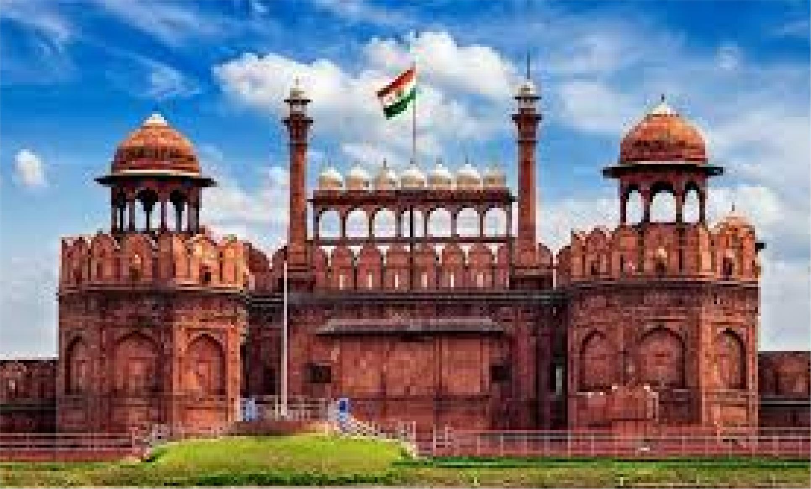

for video click on it
Red Fort (Lal Qila) - A Symbol of India's History and Power
The Red Fort (Lal Qila) is one of India’s most significant historical
monuments. It was the main residence of the Mughal emperors for nearly
200 years and is now a symbol of India's rich past and its
independence.
Basic Information
- Name: Red Fort (Lal Qila)
- Location: Old Delhi, India
- Built By: Mughal Emperor Shah Jahan
- Construction Period: 1638 – 1648 (10 years)
- Architectural Style: Mughal, Persian, and Indian influences
- Material Used: Red sandstone and marble
- Purpose: Royal residence, administrative center
- UNESCO World Heritage Site: Declared in 2007
Historical Background
The Red Fort was commissioned by Shah Jahan in 1638, after he decided to
move his capital from Agra to Delhi. It was completed in 1648 and became
the political and cultural center of the Mughal Empire. The fort
remained under Mughal rule until 1857, when the British took control
after the Indian Rebellion of 1857.
After India gained independence in 1947, Prime Minister Jawaharlal Nehru
gave his famous speech from the fort’s Lahori Gate, a tradition that
continues every year on August 15 (Independence Day).
Architectural Features
The Red Fort is a massive 256-acre complex, surrounded by 2.5-km-long
red sandstone walls that stand 18 to 33 meters (59 to 108 feet) high.
1. Lahori Gate
-
The main entrance to the fort, facing the historic city of Delhi.
-
Every year, the Prime Minister hoists the Indian flag here on
Independence Day (August 15).
2. Delhi Gate
-
Another important entrance, used by the royals for ceremonial
processions.
3. Diwan-i-Aam (Hall of Public Audience)
-
A large pavilion where the emperor addressed the public and heard
their grievances.
-
Features a white marble throne, where Shah Jahan sat during official
proceedings.
4. Diwan-i-Khas (Hall of Private Audience)
-
A lavish marble chamber where the emperor met with high-ranking
officials and foreign dignitaries.
-
Once housed the famous Peacock Throne, which was later taken by
Persian ruler Nadir Shah in 1739.
-
The famous inscription on its wall reads: "If there be a paradise
on Earth, it is this, it is this, it is this."
5. Mumtaz Mahal and Rang Mahal
-
Mumtaz Mahal: A palace for the royal women, now converted into a
museum.
-
Rang Mahal ("Palace of Colors"): Known for its gold-plated
ceilings, fountains, and vibrant decorations.
6. Moti Masjid (Pearl Mosque)
-
Built by Aurangzeb in 1659 as a private mosque for the royal family.
- Made of pure white marble.
7. Hayat Bakhsh Bagh (Life-Giving Garden)
-
A beautiful Mughal-style garden with water channels and fountains.
Cultural and Historical Significance
-
Political Center: It was the seat of Mughal power for nearly 200
years.
-
Symbol of Independence: The fort represents India’s struggle for
freedom.
-
Architectural Marvel: A mix of Persian, Mughal, and Indian styles.
-
UNESCO Heritage Site: Recognized as a site of historical importance in
2007.
Interesting Facts
-
Originally White: Some historical reports suggest that the fort was
initially covered in white limestone, but over time, it was painted
red.
-
British Modifications: The British destroyed many structures inside
the fort and converted it into a military base.
-
Peacock Throne: The fort once housed the Peacock Throne, embedded with
Koh-i-Noor diamond, which was later looted by Nadir Shah.
-
Secret Tunnels: Some believe that underground tunnels connected the
Red Fort to other Mughal structures like Salimgarh Fort and even Agra
Fort.
-
Independence Day Celebrations: Every August 15, the Indian Prime
Minister hoists the national flag and addresses the nation from the
Red Fort.
Conclusion
The Red Fort stands as a symbol of India’s glorious past and
independence. It attracts millions of visitors every year and remains a
powerful reminder of India’s Mughal heritage and colonial history.
Redfort